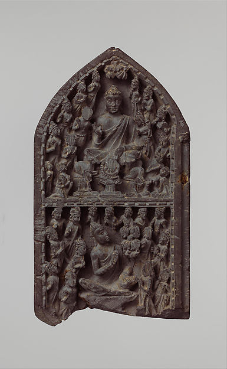

CORE / KNOWLEDGE
涅槃とは何か
涅槃はしばしば「死後の天国」のように誤解されますが、初期仏教では貪り・怒り・無知の火が鎮まることとして説明されます。

01
消滅ではなく鎮火
語源的な説明には議論がありますが、実践上は反応を燃やし続ける燃料がなくなるイメージが有用です。
02
今ここでの意味
完全な涅槃という大きな目標だけでなく、怒りや欲に即座に反応しない瞬間にも「鎮まる」という方向性を見ることができます。
03
死後の問題
経典には死後をめぐる表現もありますが、まず生きている今の執着と苦の終息を中心に読む方が実践的です。
DEPTH NOTES
涅槃とは何かをもう一段深く読む
涅槃を理解するときは、死後の場所として想像するより、貪り・怒り・無知による燃焼が鎮まるという経典的比喩から始める方が安全です。生きている間の解脱と死後の扱いも区別して読む必要があります。
原典・参照：Ud 8.3